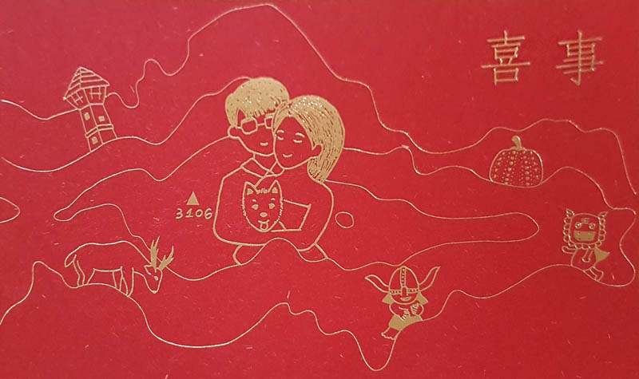
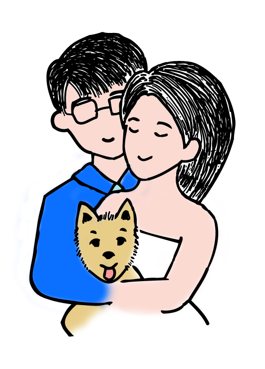
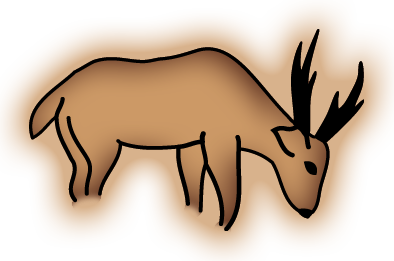
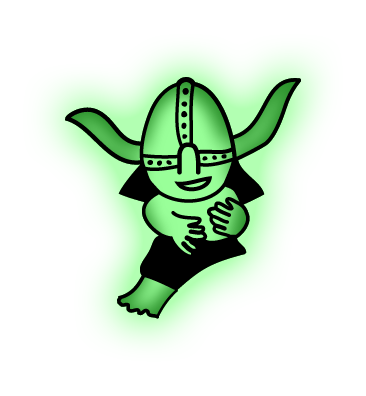

scroll ▻
  
翻山越嶺
終於遇見一個人
然後在一起
從這一天開始
我們將共享未來生命中
每一道不論是甜是苦的風景
謝謝您前來和我們一同分享這份喜悅
也謝謝您曾在/一直在/未來也在我們的風景裡
碁森與慧敏
婚禮資訊
故宮晶華一樓
2018/12/15 (星期六) 中午
十一點三十分迎賓水果酒及中式茶品
十二點婚宴開始
交通資訊
地址：台北市士林區至善路二段221號
大眾運輸
搭乘捷運淡水線
劍潭站二號出口（基河路方向）轉乘故宮晶華免費接駁車。（11:15 ~ 12:45）
士林站下車，請轉乘公車 紅30往故宮博物院至本院正館門口下車。
或轉搭乘公車255、304，小型公車18、19於故宮博物院大門廣場前下車。
搭乘捷運文湖線
至劍南路站下車，請轉乘公車棕20往故宮博物院至正館門口下車。
或至大直站下車，轉乘公車棕13往故宮博物院方向至故宮博物院大門廣場前下車
紅30 故宮博物院-捷運劍潭站
經捷運劍潭站，士林行政中心，天文館，捷運士林站
棕20 故宮博物院-內湖站
經捷運劍南路站，美麗華基河國宅，台北花市
棕13 雙溪-大直
經捷運大直站，雙溪社區，社區發展協會，大直高中
620 外雙溪-大直
經捷運士林站中研院，南港經貿園區，大湖公園、美麗華百樂園
255 雙溪社區北門
經捷運士林站，大稻程碼頭，後火車站，大同區公所
304 故宮博物院-承德/重慶線
經台北火車站（承德），捷運中和站捷運劍潭站，捷運士林站
周邊停車
至善路沿線路邊停車
位於雙溪公園至衛理，約有180個車位。
嘟嘟房故宮站
位於士林區至善路二段，故宮物院對面，至善天下旁，汽車位60個。
電話（02）2883-9134
有誠大樓停車場
位於士林區至善路二段55號，汽車位40個。
電話（02）8861-5973